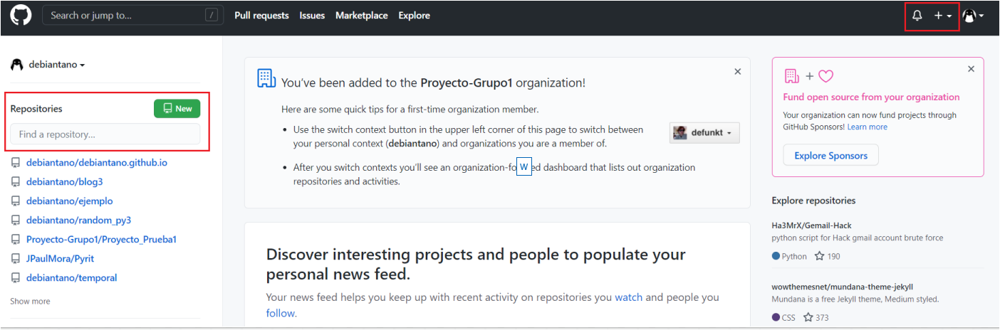
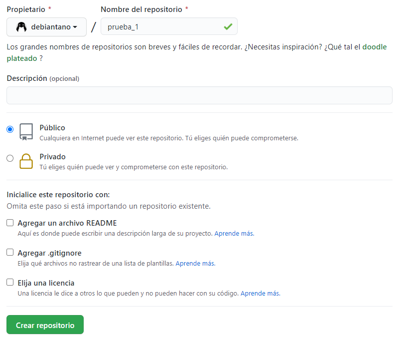
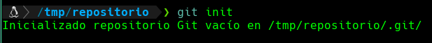
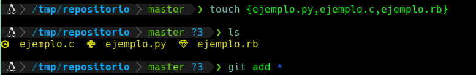

1. Desde Github creas un repositorio con el botón + de arriba a la derecha. Obviamente tienes que haberte registrado en Github para comenzar. El registro es gratuito.

Aparece una página para que indiques los datos del repositorio. Básicamente tienes que darle un nombre, elegir si es público o privado y opcionalmente una descripción
Opcionalmente el repositorio o proyecto se puede inicializar con un fichero README, en caso de no hacerlo no habrá ningún problema ya que este fichero puede crearse cuando usted lo desee.

2. Una vez que creas el repositorio mantén en el navegador de momento la página que te aparece en Github, porque tiene información importante que en seguida usaremos.
¿Sabes lo q tienes que hacer para subir los archivos? Es fácil. No lo subes por Zip ni nada de eso, sino que usas el propio Git, el sistema de control de versiones. La operación que tienes que realizar se llama push.
Asumiendo que ya tenemos Git instalado tienes que ir, en la terminal, a la carpeta de tu proyecto, entonces allí generas tu repositorio en local con la orden "init"

3. Luego, desde la carpeta utilizas haces el comando add para agregar todos los archivos al "staging area".
